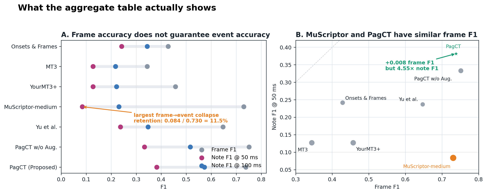
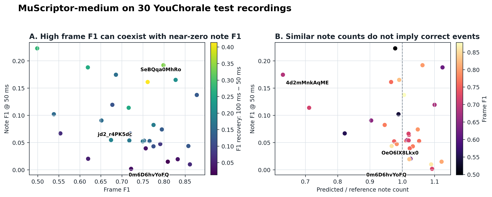
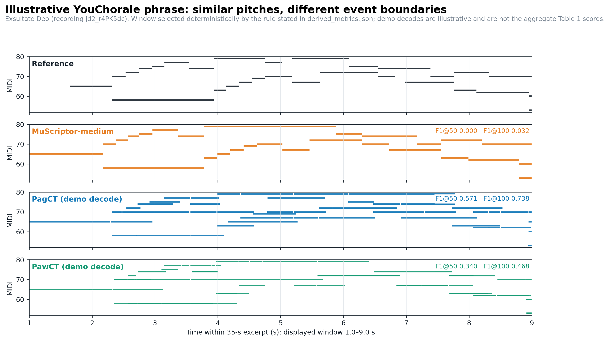
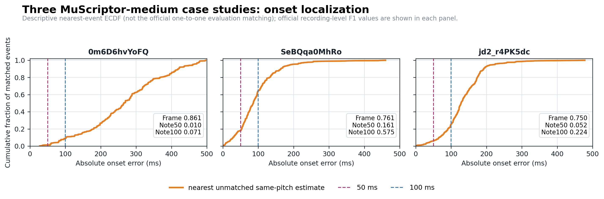
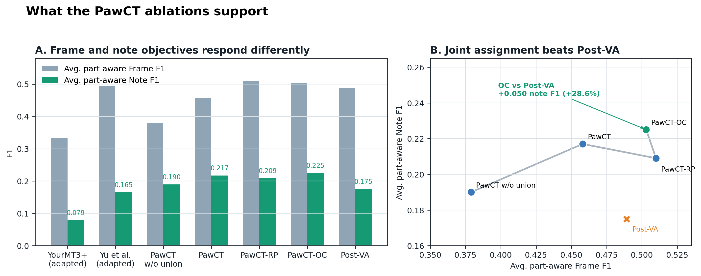

Research project
PawCT: End-to-End Choral Transcription into Separate SATB Note Tracks
1UNSW · 2UWA · 3Queen Mary University of London · 4Great Bay University
Most choral transcription systems return one merged stream of notes. PawCT identifies which sections are singing and writes a separate MIDI track for soprano, alto, tenor, and bass.
From one choir recording to four usable parts

Performance at a glance
Note F1 uses a 50 ms onset tolerance. Full per-part, frame-level, and zero-shot results are reported in the paper.
Error analysis
Why general-purpose transcription falls short on choir
The central difficulty is not merely detecting which pitches are active. It is turning sustained vocal activity into correctly localized note events.
MuScriptor-medium and PagCT are nearly tied at the frame level (0.730 vs. 0.738), but PagCT reaches 0.382 note F1 at 50 ms, compared with 0.084 for MuScriptor.
- MuScriptor retention
- 11.5%
- PagCT retention
- 51.8%
- Note-count ratio
- 1.018

Not simply a pitch-detection failure
Across 30 recordings, MuScriptor's median predicted/reference note-count ratio is 1.018. Its low note score is therefore not explained by a global tendency to emit far too many or too few notes.
Strong tolerance sensitivity
MuScriptor improves from 0.084 at 50 ms to 0.231 at 100 ms. This recovery is consistent with imprecise onset localization, although the residual gap indicates additional segmentation errors.
Scale alone does not solve it
On the same audited evaluation, MuScriptor-medium outperforms MuScriptor-large at both 50 and 100 ms. Task-aligned boundary modeling matters more here than simply increasing general-purpose model size.
Why the other baselines fall short
High precision but low recall indicates conservative detection and many missed notes in dense vocal mixtures.
Generic sequence transcription transfers weakly to precise choral note boundaries.
Its improved frame recall does not translate into improved 50-ms note F1, showing that activity coverage alone is insufficient.
The strongest task-relevant baseline, but PagCT improves both note precision and recall rather than trading one for the other.
Frame F1 is slightly higher, while note F1 is lower at both tolerances—direct evidence that frame occupancy cannot replace event-level evaluation.
All 30 test recordings
Where MuScriptor fails
The recording-level view prevents the interpretation from resting on a single favorable excerpt.

Frame F1 is 0.861, while note F1 is only 0.010 at 50 ms. Much of the sustained pitch activity is correct, but almost none of the events are localized precisely.
Note F1 rises from 0.161 at 50 ms to 0.575 at 100 ms, consistent with many near-correct but insufficiently precise onsets.
Note F1 rises from 0.052 to 0.224, but remains low at 100 ms; timing error alone cannot explain the missed, extra, merged, or fragmented notes.

View the onset-error diagnostic

Part-aware ablation
Why joint transcription and assignment help
Union supervision improves the shared acoustic task, while ordered continuity recovers note-level consistency that pitch range alone does not provide.

Listen to the transcription
This 35-second excerpt of Exsultate Deo lets you compare the part-agnostic ground truth with merged predictions from PagCT, MuScriptor-medium, and Yu et al. PawCT additionally returns four independently playable vocal parts.
Loading the reference and model outputs…
Merged transcription
All annotated or detected notes share one track.
Separate vocal parts
Play each PawCT output on its own, or compare it with post-hoc assignment.
The original excerpt is played directly from this page. The ground-truth row is the canonical part-agnostic union of the official SATB annotations for the same 00:10–00:45 passage; every reference or prediction row is synthesized in your browser with the same piano-like timbre. MuScriptor-medium is evaluated zero-shot; the Yu et al. row is a newly generated full-song inference from the frozen checkpoint associated with the reported baseline, not a historical per-song artifact. Only one player runs at a time; no source MIDI, full annotation file, checkpoint, or probability array is distributed.
View the full piano-roll comparison

How PawCT keeps the parts separate
PawCT detects notes and assigns them to vocal parts in one model. A global training signal keeps the complete pitch content intact, while pitch range and melodic continuity help maintain consistent SATB lines.

Find the notes
A shared audio encoder captures the complete musical content of the choir.
Follow each line
Separate output heads use vocal range and melodic continuity to preserve SATB structure.
Export the parts
Active soprano, alto, tenor, and bass sections are returned as independent note tracks.